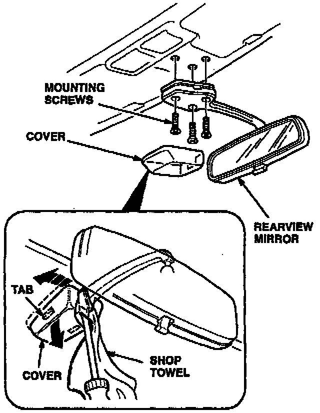
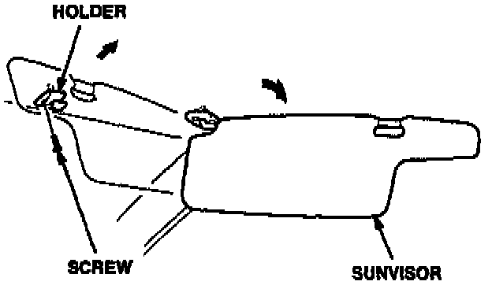
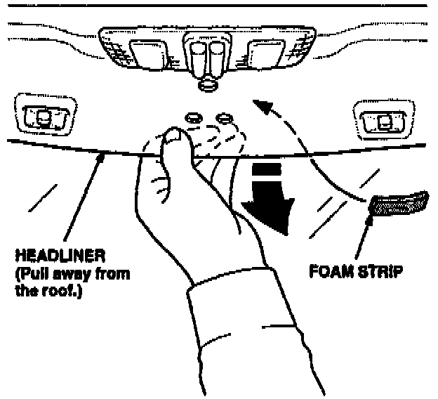
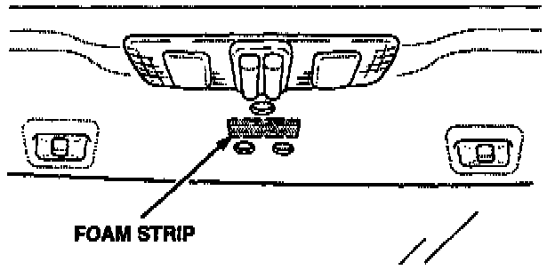

Rearview Mirror Noise
October 3, 1995BULLETIN NO.
95-024
VIN APPLICATION
ALL
MODEL
INTEGRA
YEAR
1994 - 95
Rearview Mirror Noise
SYMPTOM
A ticking noise is heard from the rearview mirror mounting area.
PROBABLE CAUSE
Lack of insulation between the rearview mirror mount and the roof.
CORRECTIVE ACTION
Install a foam strip under the rearview mirror mount, between the headliner and the root.

1. Remove the rearview mirror by carefully prying off the cover and removing its three mounting screws.
NOTE:
Use a shop towel wrapped around a flat tip screwdriver to pry off the cover. Do not allow the screwdriver to damage the mirror cover, the mirror mount, or the headliner.

2. Swing both sunvisors toward the doors, then remove the sunvisor holders. Each holder is secured by a single screw.

3. Use your fingers to pull the headliner away from the roof at the rearview mirror mounting area. Move the headliner just enough to allow installation of the foam strip.

4. Place the foam strip at the center of the rearview mirror mounting area, making sure it doesn't interfere with the mirror mounting holes. When the foam strip is in the correct position, press the adhesive covered side of it to the roof.
5. Reinstall the headliner and the sunvisor holders. Place the sunvisors into their holders.
6. Reinstall the rearview mirror, and tighten its three mounting bolts to 4 N.m (0.4 kg-m, 3 lb-ft). Attach the the rearview mirror cover.
REQUIRED MATERIALS
Closed-cell foam strip:
P/N 76430-SH4-999
WARRANTY CLAIM INFORMATION
In warranty:
The normal warranty applies.
Out of warranty:
Any repair performed after warranty expiration may be eligible for goodwill consideration by the District Technical Manager or your Zone Office. You must request consideration, and get a decision, before starting work.
Operation number: 828010
Flat rate time: 0.2 hour
Failed part number: 76430-SH4-004ZH
Defect code: 042
Contention code: B07
Template ID: 95-024A